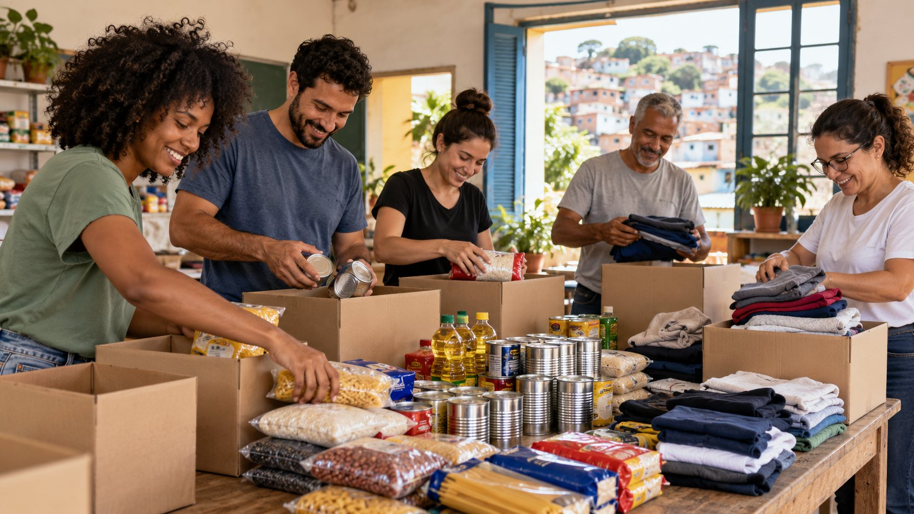

Projetos e formas de ajudar
Esta página apresenta possibilidades de participação no projeto acadêmico da Casa do Caminho.
Como participar
Existem diferentes maneiras de colaborar com uma iniciativa social. Escolha a opção de seu interesse para conhecer o próximo passo.

Frentes de apoio
Próximo passo
Escolha no formulário como gostaria de participar. Este projeto acadêmico não envia os dados cadastrados.
Ir para o cadastro